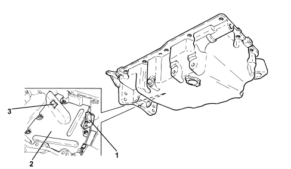

INTRODUCTION - CRANKCASE SUMP AND COVERS
- Path
- Descriptions > 10 ENGINE > 1020 CRANKCASE SUMP AND COVERS > INTRODUCTION - CRANKCASE SUMP AND COVERS
- Kind
- system description
- Applies to
- engines: 2.2 JTS; all production periods
- Interactive page
- https://sloeber94.github.io/elrnDB-aBrrSpdr/en/#/946001165
Applies to: engines: 2.2 JTS; all production periods
SPECIFICATIONS
This is a structural part of the engine that performs a mechanical role as well as containing the engine oil because it is directly connected to the intermediate shaft mount.
The oil sump is in aluminium alloy and contains special partitions that prevent the engine oil slopping around too much when the pump could end up drawing in air.
The oil level and temperature sensor keeps the level and the temperature of the oil lubricant oil inside the sump in check.
This sensor is connected to a coupling which interfaces with the Instrument Panel Node (NQS).

1. Oil level and temperature sensor
2. Anti-banging partition
3. Oil intake pipe